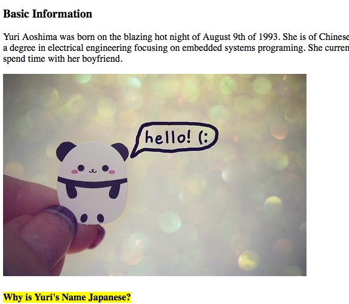

This page showcases the numerous web development projects I have worked on. Each project comes with an image, a title, and a brief description. To learn more about who I am click here
Personal Profile Webpage Using Only HTML

First web development project: personal profile developed using only HTML
Memorable Moments Blog Site
A webpage that allows me to blog and post pictures about my life
Interactive Bucket List
Web application where I can keep track of events and activities I want to do
A Beginner's Guide to Arduino
Several web pages on the basics of learning Arduino and includes tutorials
Doggy Bubble Bath
Website where clients can book spa appointments for their dogs
Yurishima Shoppers Inc
Website that mimics Amazon. Allows users to order items to be shipped the same day